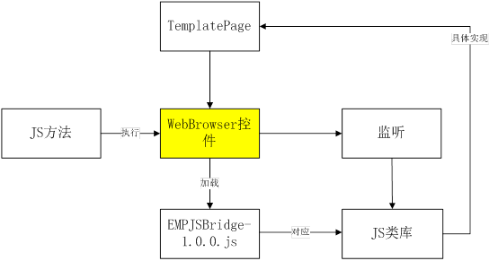

本文档根据《EMP JS Bridge Ver1.0.3.docx》文档为背景，实现windows phone 客户端与js脚本的交互功能。
微软为Windows phone平台提供了内嵌式的浏览器控件：WebBrowser,该控件用来展示网页，可以加载html和执行js脚本。
WebBrowser控件提供InvokeScript(string scriptName, params string[] args)方法来执行js脚本方法,第一个参数是js方法名称，第二个参数是传入的参数，必须是字符串数组。
可通过WebBrowser控件提供事件ScriptNotify来监听js脚本的运行情况。但是只能监听到特殊的语句:window.external.notify(<data>)。
Js脚本执行必须依赖于WebBrowser控件，于是我们编写一个EMPJSBridge-1.0.0.js来作为js脚本方法与c#代码方法实现之间的桥梁。
首先，每一个js脚本方法必须包含window.external.notify(string outputString)这条语句，执行脚本之后WebBrowser控件才能监听到WebBrowser执行了什么js方法。例如：
function alert(msg) {
var v = "msg|";
v += msg.toString();
window.external.notify(v);
}
这个方法是我们重写了js语言中的alert方法，如果本程序调用js库执行alert("hello")脚本的话，实际上WebBrowser控件内不会执行：window.external.notify("msg | hello "); 然后我们就能监听到浏览器发出的事件，得到字符串值："msg | hello "，然后对于字符串"|"分割解析，最终在客户端弹出消息框。
根据js的设计文档， WindowsPhone客户端框架的EMPJSBridge-1.0.0.js中与文档定义了一一对应的类和方法，比如：
/**
********************* SMS ********************
*/
if (!EMPJSBridge.hasResource("sms")) {
EMPJSBridge.addResource("sms");
sms = function() {}
sms.send = function(phoneNum, content, callback) {
try {
varoptions = [];
options.push(phoneNum);
options.push(content);
EMPJSBridge.exec(callback, "ryt.sms", "send", options);
} catch (e) {
alert(e);
}
};
};
由于WindowsPhone客户端的浏览器控件执行js脚本方法时的参数只能传字符串数组，所以我们定义了一些帮助方法，解析传入的字符串参数，生成对应的数字或者对象等其他所需类型，再调用页面的js方法。例如：
EMPCallBackHelper = function(invokeMethod, errorCode, params) {
varcode = 0;
if (errorCode != "0") {
code = -1;
}
if (typeofparams == 'undefined') {
this[invokeMethod].call("tempString", code);
} else if (typeofparams == 'string') {
if (params.compare("True") == 1) {
this[invokeMethod].call("tempString", code, true);
} else if (params.compare("False") == 1) {
this[invokeMethod].call("tempString", code, false);
} else {
varfValue = parseFloat(params);
if (isNaN(fValue)) {
this[invokeMethod].call("tempString", code, params);
} else {
this[invokeMethod].call("tempString", code, fValue);
}
}
} else {
alert("EMPCallBackHelperelse");
}
};
具体的功能实现分为2种情况：非UI交互和需要UI交互。如果非UI交互，则直接在JSLib中进行处理；如果需要UI交互，则利用反射机制先调用当前页面的对应方法执行，然后返回结果给JSLib的方法。

步骤一:
在桥接文件EMPJSBridge-1.0.0.js文件(MainProject/Resources下有备份)中，添加相应的关联方法库,并将其发送给模版开发人员部署在后台服务器。
以file接口为例,在.js文件中加入如下代码：
if (!EMPJSBridge.hasResource("file")) {
EMPJSBridge.addResource("file");
file = function() {}
file.write = function(name, data, callback) { //some code };
file.read = function(fileName, fileType, callback) {
try {
var options = [];
options.push(fileName);
options.push(fileType);
EMPJSBridge.exec(callback, "ryt.file", "read", options);
} catch (e) {
alert(e);
}
};
EMPJSBridge.addConstructor(
function() {
if (typeof file == "undefined");
}
);
};
};
步骤二:
在MainProject或扩展工程编写响应类似如下接口类：
namespace RYTong.ExtendJSLib
{
public static class JSFile
{
public static void WriteFile(string callback, string path, string content, WebBrowser wb)
{
Action action = () =>
{
if (!string.IsNullOrEmpty(callback))
{
wb.InvokeScript("EMPCallBackHelper", new string[] { callback, "0" });
}
};
RYTFile.WriteFile(path, content, action);
}
public static object ReadFile(string callback, string name, string type, WebBrowser wb)
{
var result = RYTFile.ReadFileByType(name, type);
if (result != null)
{
if (type.Equals("text"))
{
wb.InvokeScript("EMPCallBackHelper", new string[] { callback, "0", result.ToString() });
}
else
{
var bytes = result as byte[];
var str = System.Text.Encoding.UTF8.GetString(bytes, 0, bytes.Length);
wb.InvokeScript("EMPCallBackHelper", new string[] { callback, "0", str });
}
}
return result;
}
public static void FileDelegate(string[] pars, WebBrowser wb)
{
if (pars != null && pars.Length >= 2)
{
if (pars[1].Equals("write"))
{
if (pars.Length == 4)
{
WriteFile(string.Empty, pars[2], pars[3], wb);
}
}
else if (pars[1].Equals("read"))
{
if (pars.Length == 4)
{
ReadFile(string.Empty, pars[2], pars[3], wb);
}
}
}
}
}
}
步骤三：
最后将编写的Js扩展接口导入预留扩展接口，在需要时(JsManger找不到file接口时)将被回掉。例如：
在HostPage()中加入如下代码，完成关联.
JSManager.ExtendJSAction = (cmd, parameters, webview) =>
{
if (cmd.Equals("ryt.file"))
{
JSFile.FileDelegate(parameters, webview);
}
};